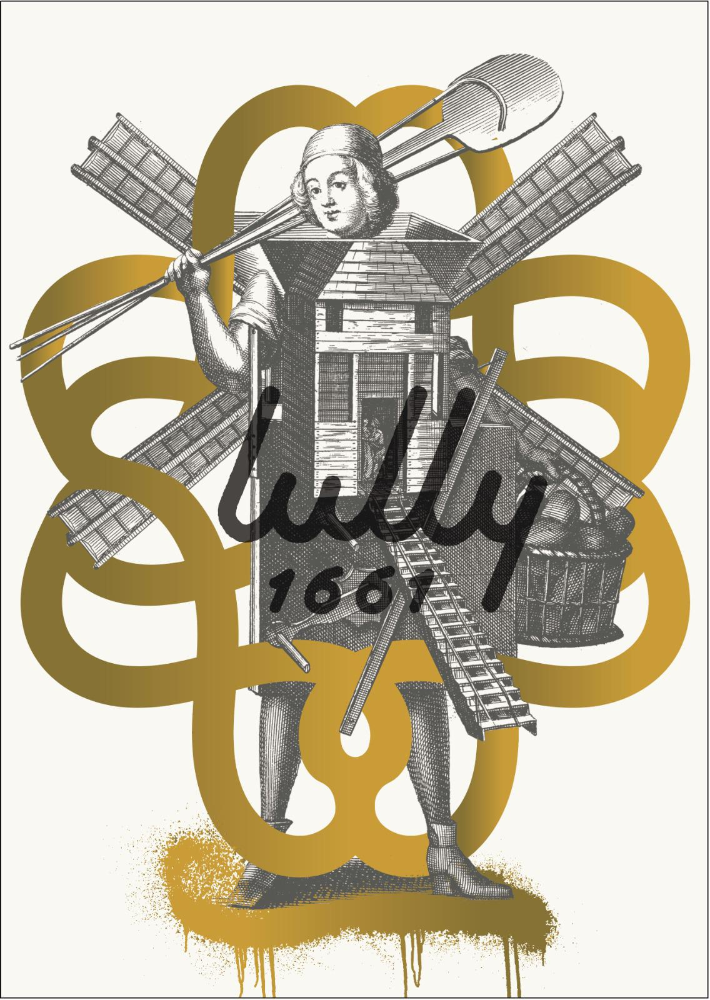
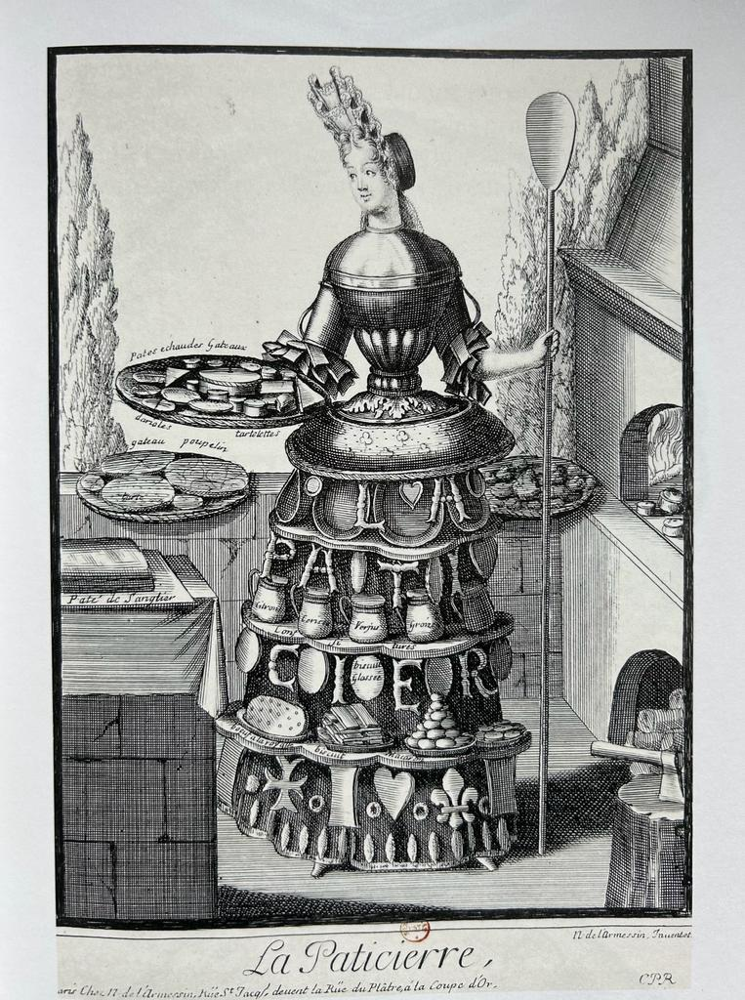
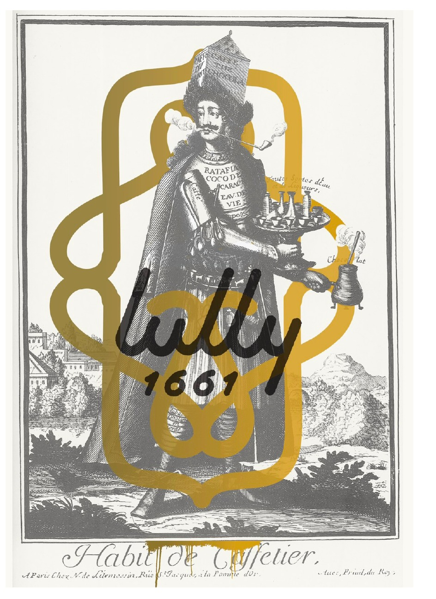

The brand already owns four Baroque sub-marks from Nicolas de Larmessin's Costumes Grotesques et les Métiers series (c. 1695): Le Meunier, La Pâtissière, Le Caffetier — and, as namesake, Le Musicien (Jean-Baptiste Lully, 1632–1687). Two of the four already carry a gold ornamental frame and a loose, almost graffiti-like "lully 1661" ink signature.
That treatment is the whole direction: refined base, irreverent overlay. Heritage without the dust. The website picks up that same gesture — long-form editorial serif for display, a cursive italic for the sentimental line, and clean sans for everything practical.
These are reference points for the feeling, not the layout. The site should read like it belongs in this room, but with lully's own voice.
Patisserie with a serif-led editorial presence. Large-format photography, generous whitespace, assertive typographic hierarchy. Lesson: let the product speak; frame it with calm.
Same craft pedigree, looser tone. Shows how a heritage bakery can talk to a younger audience without diluting the craft story. Lesson: the brand can be playful.
Four figures from one 1695 engraving series — three craftspeople plus Le Musicien as namesake. Two already carry the gold-flourish + ink-script treatment. Lesson: the direction is already inside the brand — we amplify it.
Five colours, held loosely. Paper cream carries the page; ink is near-black rather than pure black so the page reads warm, not cold; gold is ornamental only; ember is reserved for editorial moments (seasonal callouts, CTAs); stone does the quiet UI work.
Fraunces carries display and product names — a variable serif with an optical-size axis that lets headlines feel almost woodcut while small sizes stay clean. Instrument Serif Italic is reserved for the brand's sentimental line. Instrument Sans handles everything operational. All three are free and already on Google Fonts — zero licence risk.
Our sourdough is mixed at five in the morning, folded four times, and rested for forty-eight hours before it sees the oven. The flour is stone-milled in the Mâconnais, where Jean-Baptiste Lully was born in 1632. Everything else follows from there.
Four sub-marks from Larmessin's Costumes Grotesques are the brand's primary illustration system — three craftspeople (Meunier, Pâtissière, Caffetier) and the namesake, Le Musicien. Meunier and Caffetier already carry the full treatment — gold ornamental flourish around the period engraving, with the "lully 1661" signature in casual ink. Pâtissière and Musicien are the week-1 design task: apply the same treatment so the set is coherent.

Used for: breads, grain story, origin-of-the-flour moments.

Week 1 design task: add ornamental gold frame + ink signature to match the set.

Used for: drinks, brunch, counter service, café moments.
Jean-Baptiste Lully, 1632–1687. Used for: brand story, About, festive & events, Home hero.
A realistic sample of the homepage at launch (2026-05-15). Hero built around Le Musicien (the namesake); three pillar cards anchored by the craft sub-marks; a "This week at lully" module editable by the client; three store cards with real addresses and hours; dark ink footer.
Maintenant, toujours mieux qu'avant.
An organic bakery born in Lisbon in 2022 — stone-milled flour from the Mâconnais, 48 hours of fermentation, an oven at the heart of every boutique. Three stores across the city, one philosophy: tradition, re-signed.
Sourdough, rye, 48-hour fermentation, stone-milled flour.
Viennoiseries, tarts, seasonal cakes, and now — brunch at Anjos.
Espresso, filter, matcha, hot chocolate — and the Lully house blend.
Launching 15 May at Anjos — a menu built around eggs, seasonal greens, and our own breads.
Our signature long-fermented sourdough. Baked every morning in all three stores.
Candied Amalfi lemon, crème légère, shortcrust. Available Tue–Sun.
Pre-order a curated box for the long weekend — pickup from your nearest store.
Rua do Forno do Tijolo 46 · 1170-135 Lisboa
Rua 4 de Infantaria 43 · 1350-267 Lisboa
Rua do Grilo 12 · 1950-144 Lisboa
The brunch-menu page is the whole point of the 15 May event. Anjos-only, dine-in only (no pickup in v1.0). This is an editorial menu, not a shop page — the brunch coming to life is the job.
A menu built around our own breads and pastries, stone-milled flours, free-range eggs, and what the market gives us that week. Tue–Sun, from 8:30 to 12:30. Reservation recommended.
Four years of bread and pastry. A flagship in Anjos with a proper kitchen, a proper pass, and the oven right there at the heart of the room. The next natural step.
Brunch is how we want you to meet the full range of what we bake — on a plate, with an egg on top, next to something we just pulled from the oven. Every dish on the menu uses something made in-house.
15 Maio 2026 · Anjos · from 8:30
Reserve a tableThis document exists to de-risk the 2026-05-15 launch: enough direction to start building, not so much that we freeze decisions that should stay open.